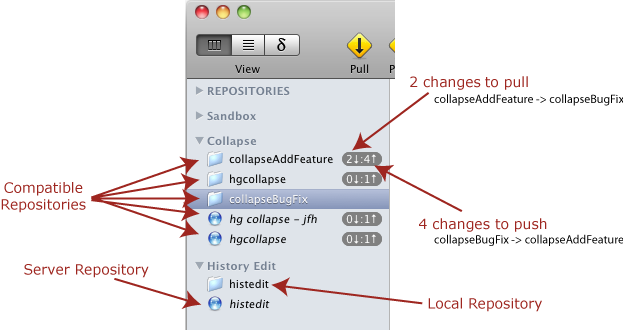

In a MacHg Document Window the left sidebar is always visible and contains a list of repository references. MacHg documents never contain any actual repositories. Instead MacHg is used to manage repositories which exist outside of MacHg. We sometimes refer to a repository reference as a repository when the distinction is clear.
Below is an example screenshot showing a collection of repositories. The repository 'collapseBugFix' is selected. When a repository is selected, then all repositories compatible with the selected repository have a badge beside them with the number of changes listed with respect to the selected repository. In the example here, you can see that with respect to the repository 'collapseBugFix', we could push 4 changesets to the repository 'collapseAddFeature', and we could pull 2 changesets from 'collapseAddFeature' into the selected repository, 'collapseBugFix'.

You can use standard drag and drop features to rearrange the repositories in the repository list. Through control clicking in the sidebar or through the Repository menu you can add an existing local repository, create a new local repository, add a server repository, or create a new grouping folder.
Any repository whose name in the sidebar is given in italics resides on a server and is not stored locally.